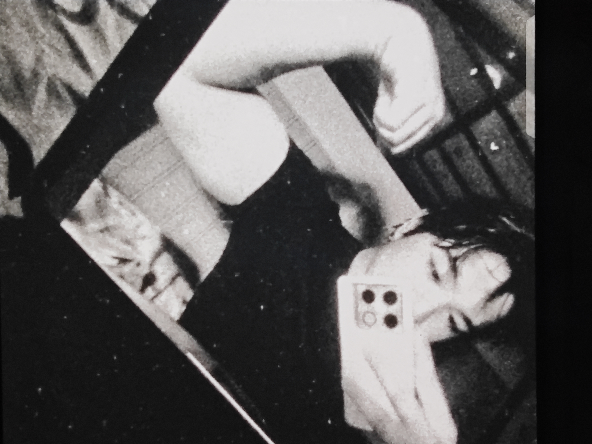

PROFILE | FAMILY | ABOUT ME | PET CARE
ABOUT ME TO HOY

I am a 17-year-old student who deeply enjoys playing mobile games, particularly Call of Duty: Mobile (CODM) and Mobile Legends: Bang Bang (MLBB). These games are a big part of my daily routine and how I connect with others.
Beyond gaming, I have a unique talent for creative visualization. I can constantly construct images inside my mind and easily translate those thoughts onto paper or canvas through drawing and painting.
Looking ahead, my one and only dream is to build a highly successful life for myself. I aspire to eventually move abroad with my family to seek new opportunities and create a bright future together.
Additional things about my Mom, My mom used to teach HTLM lessons before in Saint Mary's University thats why she enjoys lookijg at my codes amd tell me what i need to change. Sometimes her co-teachers asked me what should they do if they wanna put an image in their code, I happily help them by telling my mom what to do and make her tell them what they will do. isnt that cool?
Dont give up and keep on going because theres a future thats waiting for you
My one amd only goal in life is to work hard and become truly successful in my future career. I want to build a stable foundation that allows me to achieve financial independence and personal growth.
Family is incredibly important to me, so a core part of my dream is ensuring my parents are taken care of. I want to share my achievements with them and make sure they are a central part of my journey.
Lastly, I want to make a beautiful, fulfilling, and happy life alongside my loved ones. I look forward to turning these aspirations into reality through dedication and continuous effort.